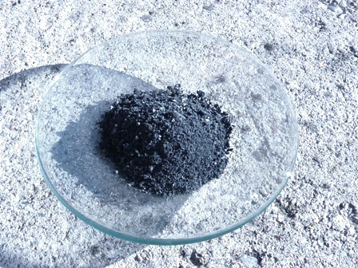

Lo scopo di questo esperimento lo si vedrà appieno nel prossimo post (anche se qualcuno lo potrà facilmente intuire).
La reazione fondamentale da eseguire è la seguente:
4 Mg + SiO2 --> 2 MgO + Mg2Si
in cui il magnesio si ossida a spese dell'ossigeno della silice ed il silicio si riduce da ossido ad elemento e si combina con l'eccesso di magnesio per dare il siliciuro Mg2Si.
Preparazione della silice
Come fonte di SiO2 ho usato sabbia comune, a dire il vero molto impura per calcio e ferro; non avendo a disposizione silice pura, ho lavato prima la sabbia con acqua e poi con HCl al 15% a caldo; in questo modo viene eliminato il calcare ed un po' di ferro.
Risciacquando, decantando e filtrando più volte, rimane aderente al filtro in questo modo anche una buona parte della componente argillosa. Dopo aver fatto seccare all'aria, polverizzare un po' della sabbia trattata in mortaio, ottenendo una polvere grigia molto fine. A questo punto la silice va seccata a temperatura elevata mescolando, per eliminare ogni traccia di umidità.
La procedura che segue è delicata e va eseguita con le dovute precauzioni e in ambiente adatto. Modifiche maggiorative nelle dosi indicate o umidità nei reagenti possono portare a reazione incontrollata o comunque pericolosa.
Materiale occorrente:
- silice SiO2 pura (in mancanza, prepararla come sopra)
- magnesio in polvere
- provetta a perdere
- bunsen
- mescolare 2 g di polvere di magnesio e 1,5 g della silice prima preparata (questa è in leggero eccesso per compensare la purezza) e porli sul fondo di una provetta asciuttissima e "sacrificale". Il motivo di questo termine lo si capirà alla fine dell'esperimento.
Coprire la miscela con un paio di millimetri di silice, per isolarla dal contatto dell'aria.
Preparare un setup adeguato in cui sia possibile appendere con un morsetto la provetta inclinata a 45° in maniera stabile ed in modo che sia possibile investirla con la fiamma forte del bunsen. Porre il tutto su una base non infiammabile.
Non tenere manualmente la provetta con la pinza di legno!
Quando è tutto pronto investire la provetta con la fiamma del bunsen ed allontanarsi quanto basta in sicurezza; la reazione ci mette un po' ad avviarsi ma poi improvvisamente parte in un punto e diventa in un attimo assai "vivace" (eufemismo...!), con possibile proiezione di materiale incandescente, oltre ad emissione abbondantissima di fumo bianco di ossido di magnesio MgO.
La provetta fonde parzialmente, certamente si rompe ed ai frammenti rimane aderente un residuo nero; lasciar raffreddare, rompere completamente il fondo della provetta e separare il residuo dai pezzi di vetro.
Raccogliere il prodotto in un contenitore al riparo dall'umidità.
Naturalmente quando si parla di combustione avvengono sempre altre reazioni secondarie indesiderate, che portano il siliciuro di magnesio ottenuto ad essere molto impuro, tuttavia sufficiente per gli usi di curiosità che ne andremo a fare.
Mg2Si si presenta come una polvere nera, con alcune scagliette più grandi.
Bagnato con acqua emana odore di ammoniaca perchè in una delle reazioni secondarie si dorma anche azoturo di magnesio Mg3N2 che inumidito genera appunto NH3.

Per ora mettiamo da parte il nostro nero siliciuro in attesa di vedere cosa sarà capace di fare la prossima volta.